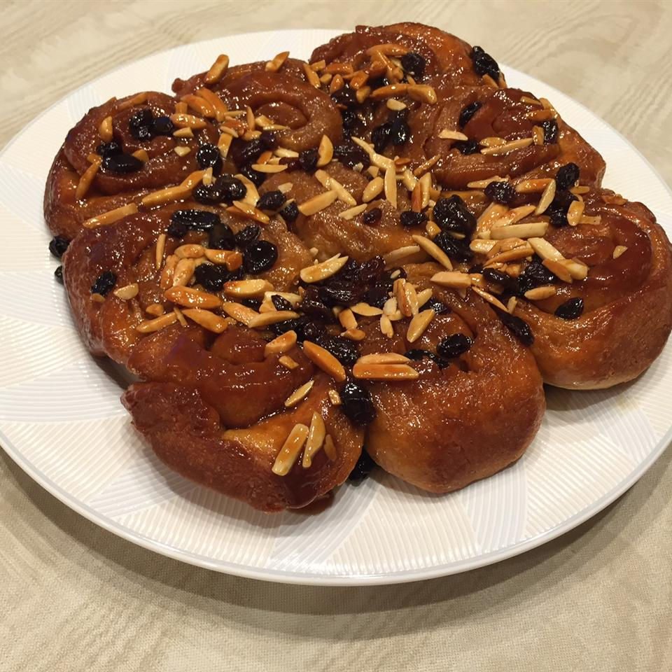

Carlos' Cooking Catalog > Odin Recipes > Sticky Buns

Description
Not really sure to be honest! They look hella good tho!
Ingredients
Dough
- 2 (.25 ounce) packages quick-rising yeast (such as Fleischmann's RapidRise®)
- 1/2 Cup Lukewarm Water
- 4 1/2 Cups Sifted All-Purpose Flower
- 2 Eggs, Beaten
- 1/2 Cup Warm Milk
- 1/2 Cup White Sugar
- 1/2 Cup Butter, Melted
- 1 Teaspoon Salt
Topping
- 3/4 Cup Brown Sugar
- 1/2 Cup Butter
- 3 Tablespoons Honey
- 1 Tablespoon Light Corn Syrup
- 1 Cup Raisins (Optional)
- 1 Cup Walnuts (Optional)
Filling
- 1/4 Cup Butter, Melted
- 3/4 Cup White Sugar
- 2 Teaspoons Ground Cinnamon
- 1 Cup Raisins (Optional)
Steps
- Dissolve yeast in lukewarm water in a large bowl. Set aside for 5 minutes. Stir flour, eggs, warm milk, 1/2 cup white sugar, 1/2 cup melted butter, and salt into the yeast and water until the mixture is a moist and sticky dough.
- Put dough in a greased bowl and cover with a wet towel. Set aside in a warm place until dough doubles in size and holes poked into dough with a finger stay indented, about 1 1/2 to 2 1/2 hours.
- Stir brown sugar, 1/2 cup butter, honey, and corn syrup together in a saucepan over medium heat; cook, stirring occasionally, until the sugar dissolves. Pour the topping mixture into the bottom of 2 9x13-inch non-stick baking dishes. Sprinkle 1 cup raisins and walnuts evenly onto the topping mixture.
- Punch down dough and roll into a rectangle shape 1/4 to 1/2-inch thick.
- Brush 1/4 cup melted butter over the dough rectangle. Stir 3/4 cup white sugar and cinnamon together in a small bowl; sprinkle over the butter. Sprinkle 1 cup raisins evenly over the dough. Roll dough around the filling into a cylinder; cut into 3/4-inch slices and arrange into the baking dishes. Set aside to rest for 20 minutes or up to overnight in the refrigerator.
- Preheat oven to 375 degrees F (190 degrees C).
- Bake rolls in preheated oven until no longer doughy in the middle, about 25 minutes. Immediately flip onto a serving platter, transferring topping onto rolls, and serve warm.